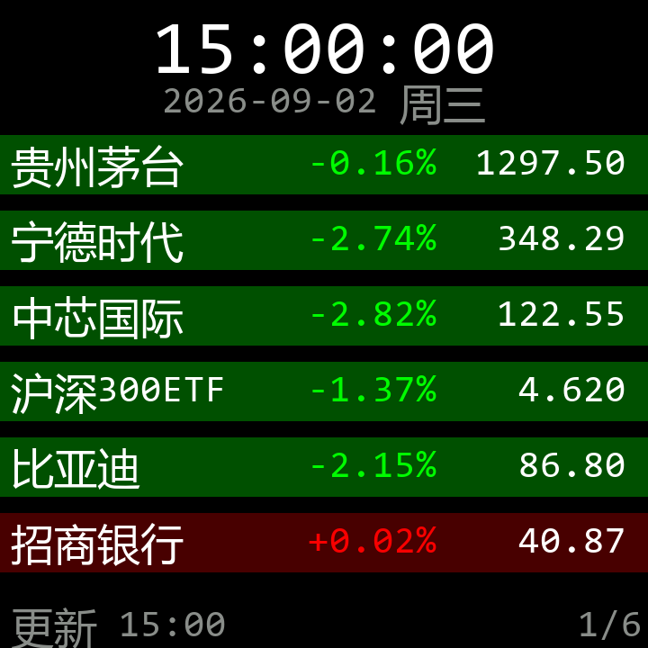
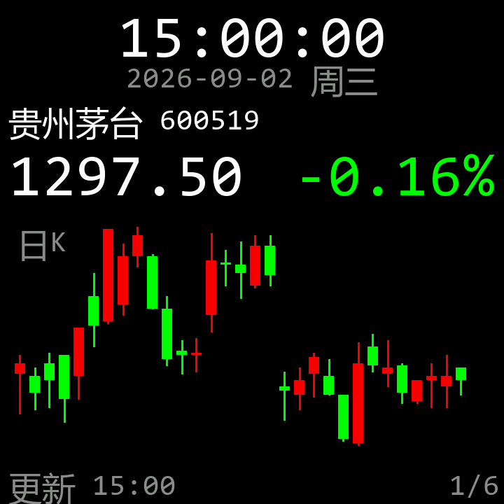
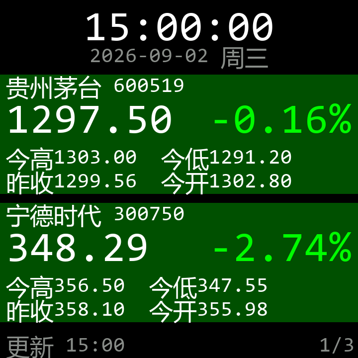
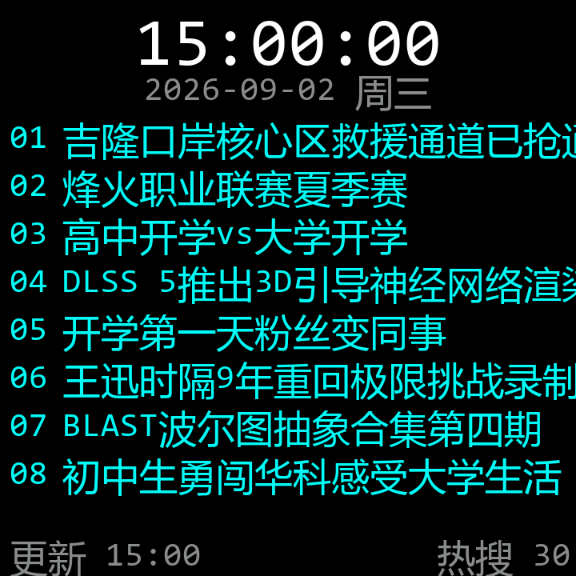
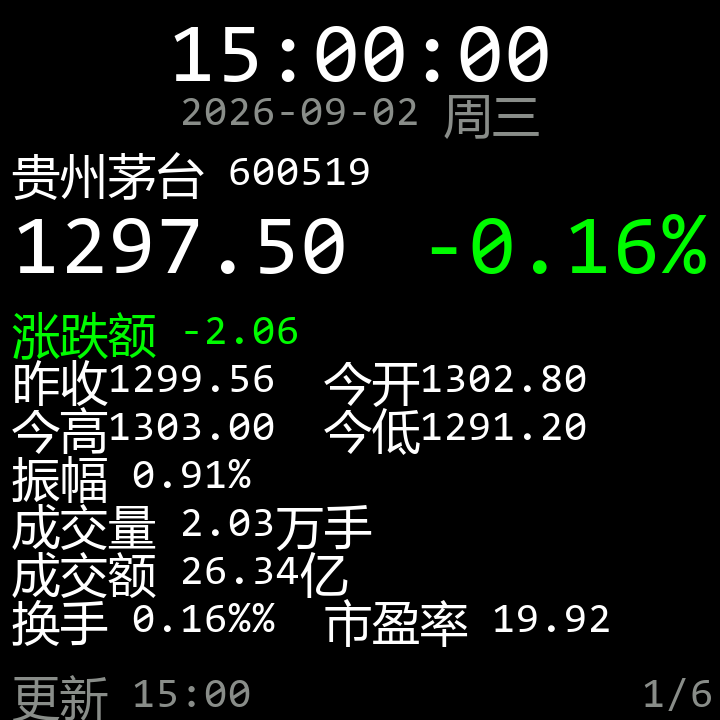
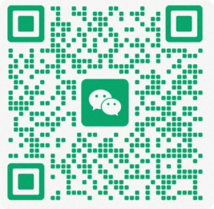

盯盘不需要打开电脑、打开行情 App、还要登录。插着电摆在桌面上抬眼就是，比通知弹窗更直接、比手机 App 更不打扰。
代码前缀自由区分市场，无需手动选类型：
sh / sz — A 股 · ETF · 指数hk — 港股（恒生、恒科）us — 美股（NDX、SPX）jj / of — 场外基金hf — 黄金 / 贵金属每只标的 30 日真实日 K（前复权 OHLC），非交易时段画历史 30 根，交易时段在右侧追加 1 根今日实时柱；场外基金画单位净值折线。屏上最多 31 列。
手机 / 电脑浏览器直接打开设备热点或局域网地址就能改：自选代码、主题、刷新间隔、滚动间隔、亮度、涨跌幅阈值、激活码、日志等级——全部免装 App。
列表 / 大图 / 放大列表 / 热搜 / 详情，覆盖不同看盘节奏：扫一眼 vs 死盯一支。

一屏 6 只，涨跌幅染色；适合通勤扫盘

单只 + 30 日 K 线 + 今日实时柱；适合死盯一支

一屏 3 只，大字号；适合工位远观

B 站实时热搜滚动；休息区 / 前台话题

全字段 7 行（开高低收、涨跌额、量、额、换手、市盈率）；适合深度研究
主题截图均为 2026-09-02 真实收盘数据快照渲染，非实时画面。
硬件虽小（一颗 ESP32-C3 + 一块 240×240 屏），能做的事比你想的多。
每只标的可单独设「跌多少才看」/「涨多少才看」的阈值，未触发自动隐藏——持仓夜里睡得着，设个涨 5% 才上屏就不会被洗出去吓醒。
主题 4 自动拉 B 站热搜榜前 20 条滚动显示，热搜是聊话题时最便宜的"破冰素材"。
刷新间隔 / 滚动间隔 / 亮度全部用网页滑块调，保存即生效，无需重启。亮度范围 1–100，默认 80。
双分区升级：新固件写到另一分区，启动正常即标记有效；若新固件首轮崩溃，自动回滚到旧版，设备永远能救回。
首次上电未配过网，设备自己开 INFO-DISPLAY 热点，手机连上即弹出配网页。
联网后自动 SNTP 校时，断网兜底用上游 HTTP 响应头 Date 取时间，时钟不用手动调。
均为真实参数（来源：源码 app_types.h 与默认配置）。
| 主控 | ESP32-C3 (RISC-V 单核) · 4 MB Flash · 无 PSRAM |
|---|---|
| 屏幕 | 1.28 寸 ST7789 SPI · 240×240 · RGB565 全彩 |
| 联网 | 2.4 GHz Wi-Fi · STA / AP 双模式 |
| 固件版本 | v1.0.2（2026-09 当前构建） |
| 自选容量 | 最多 8 项（A 股 / ETF / 指数 / 港股 / 美股 / 黄金 / 场外基金） |
| 主题数 | 5 套（列表 / 大图 / 放大列表 / 热搜 / 详情） |
| K 线 | 每只 30 根历史日 K + 交易时段追加 1 根实时柱（屏上最多 31 列） |
| 数据源 | 腾讯行情 qt.gtimg.cn · 新浪日 K（A 股 / 指数 / ETF + 美股 · 港股）· 东财基金净值 · B 站实时热搜 |
| K 线 / 基金代理 | 本机 kline_proxy.py（终结 TLS + 裁剪大数据），设备到主机走 HTTP:80 |
| 刷新间隔 | 1–60 秒可调（网页滑块） |
| 滚动间隔 | 0.5–60 秒可调（4 个主题共用同一设置） |
| 亮度 | 1–100 可调（网页滑块，保存即生效） |
| 校时 | SNTP 自动校时 · HTTP-Date 兜底 |
| 升级 | 网页 OTA · A/B 双分区 · 启动崩溃自动回滚（防砖） |
| 配网 | 未配网时开 INFO-DISPLAY AP 热点，手机连上即配 |
Chrome / Edge 浏览器直接刷写，无需安装任何工具,打开即可烧。
file:// 双击打开（Web Serial 仅允许 https / localhost）裸板 / 带壳整机 / 批量，配置和数量不同方案不同——直接私聊说明用途，我按你的情况配。
提供软件，玩家自己准备硬件 / 3D 打印外壳。适合爱折腾玩家。
装好壳、预装配置好，插电即用。适合不想折腾的人。
多台可走渠道政策；也可按需求定制主题、自选预置、外壳丝印等。

设备到手固件已预装、激活码随货附，插电就能跑。
插上电源屏幕即亮。首次上电如果未配过网，会自动开 INFO-DISPLAY 热点。
连上 INFO-DISPLAY 热点，浏览器会自动弹出配网页，填家里 Wi-Fi 即可；配好后设备加入家庭 Wi-Fi，在浏览器输入设备 IP（路由器后台可查）也能进配网页。
一行填一个代码（前缀 sh/sz/hk/us/jj/hf），保存即生效。带 +/- 前缀可设涨跌阈值；顺手把随货的激活码填进激活框，解锁 8 只全功能。
升级新版固件直接在网页点 OTA 推送。
数据准吗？有没有服务器中转？
行情直接从公开接口拉取（腾讯 qt.gtimg.cn、新浪、东财、B 站），设备 ↔ 主机 ↔ 上游，全程无自建服务器、无中转。A 股 / ETF / 指数 / 港股 / 美股与同花顺 / 东财一致；美股 K 线因新浪固定返回全量历史，由本机 kline_proxy.py 终结 TLS 并裁剪成 30 根喂回设备。
要不要自己装 Python / 环境？
不需要。设备端纯固件运行；网页烧录纯浏览器；只有美股 / 港股 K 线（且你想要这俩标的）才需要在本机跑 kline_proxy.py——A 股 / 基金 / 指数 / ETF 不需要代理。
激活码怎么来的？换设备或丢了怎么办？
每台售出随货附激活码，在网页输入即解锁 8 只全功能。换设备或激活码丢失，凭设备码补发即可。
为什么 Safari / Firefox 不能烧录？
浏览器厂商对 Web Serial API（用于直接访问 USB 串口）的支持不同：Chrome / Edge / Opera 全平台支持（Win / macOS / Linux / Android），Safari / Firefox 至今未实现。临时方案：换台电脑用 Chrome，或在 macOS 上用 Edge。
OTA 升级会不会变砖？
A/B 双分区设计：新固件写到另一分区，重启从新分区跑一次，跑通了就标记新分区有效；跑挂了（首轮无法联网取数）下次自动回滚到旧版本。除非你硬把电源拔在新固件的关键初始化阶段，否则不会变砖。
闲置多久会掉线？
设备 Wi-Fi 一直保持连接（默认不进入省电模式），闲置不会主动断网。SNTP 定期校时保证时钟准。
屏幕能换吗？尺寸有别的吗？
当前固件只适配 240×240 ST7789 SPI 屏（1.28 寸圆角 / 1.54 寸方形均可）。换屏需改驱动引脚与分辨率宏并重新编译烧录，属于定制开发范畴，私聊详谈。